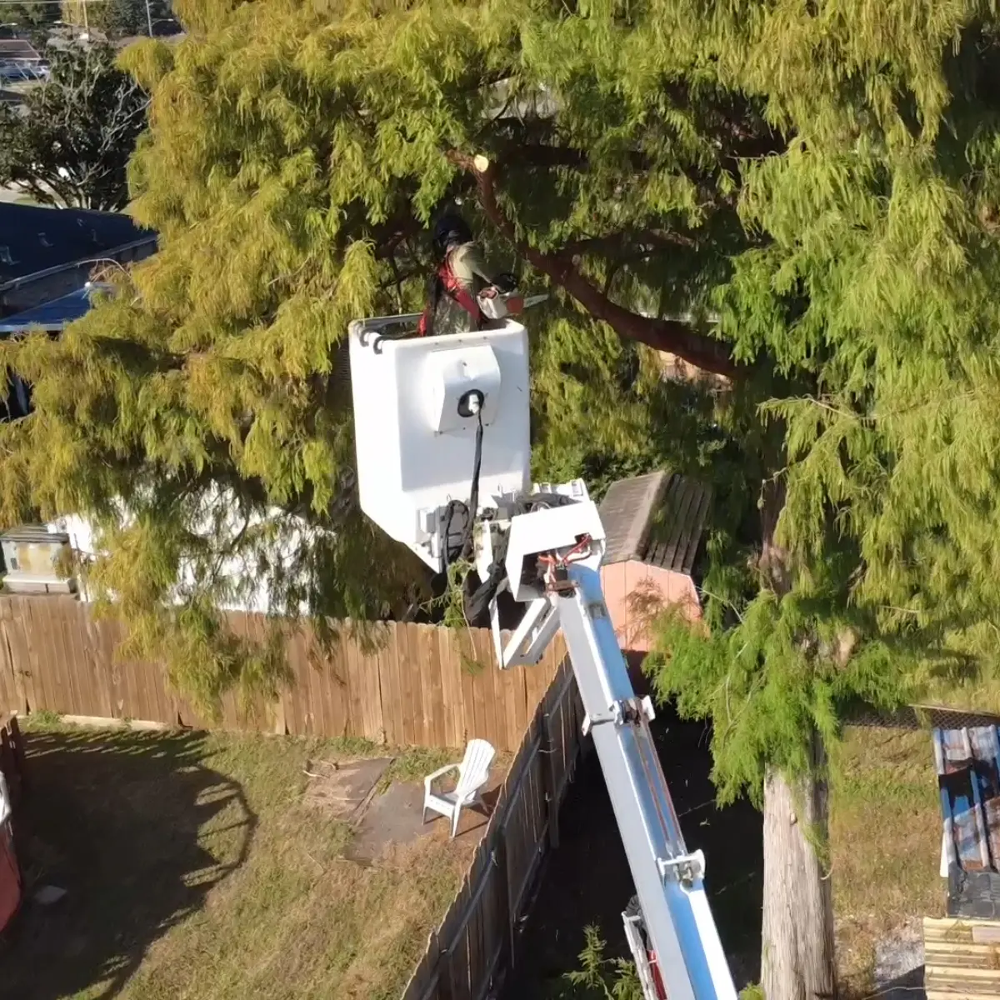
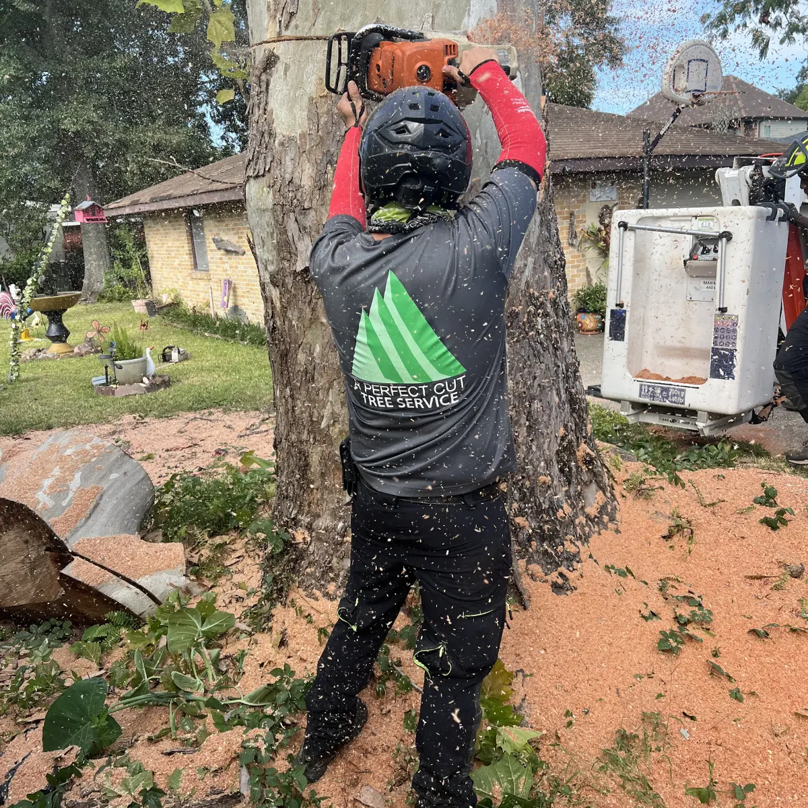
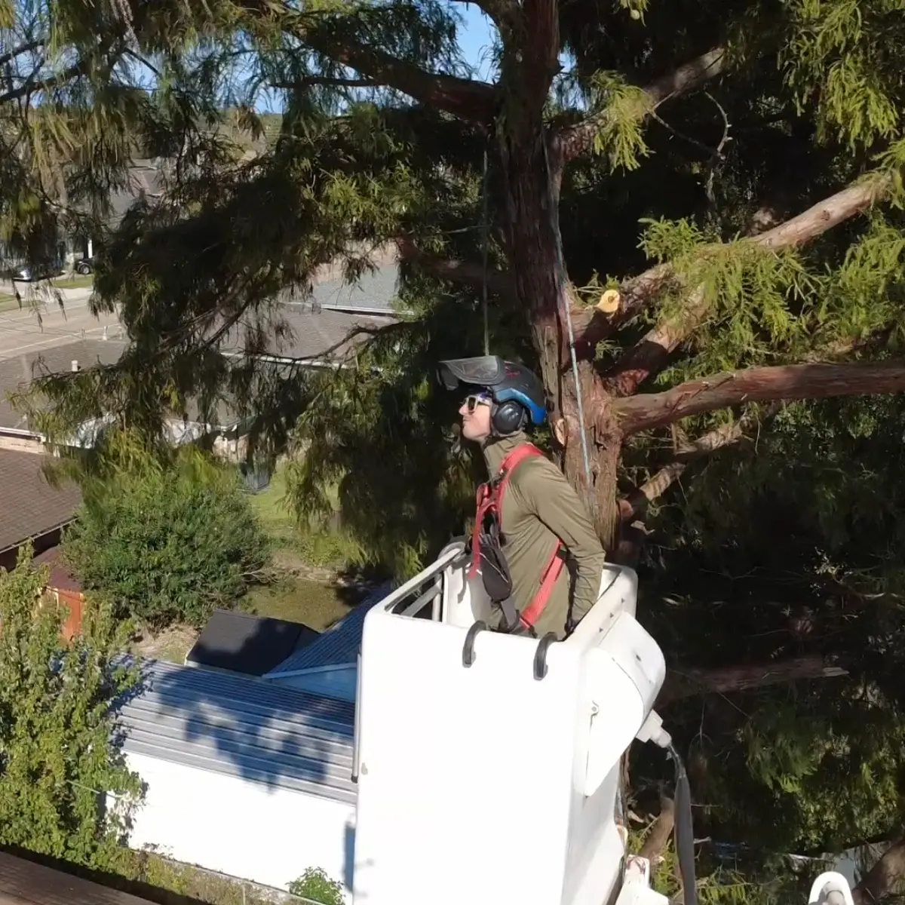
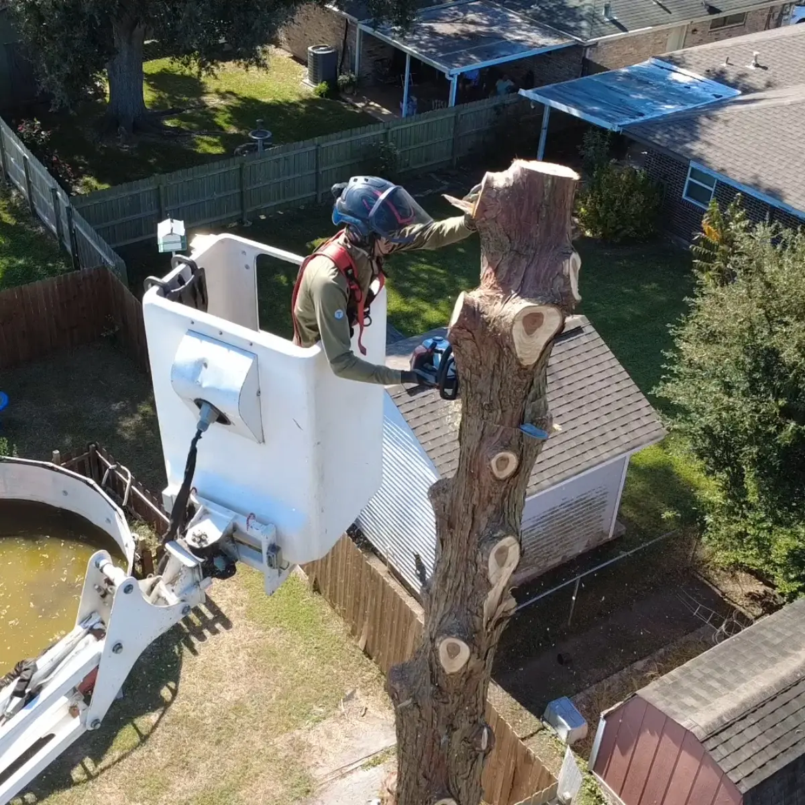

Tree Planting & Transplanting in New Orleans, LA
Are you ready to spruce up your landscape but you’ve been putting off the tedious and labor-intensive task of planting and transplanting trees? A Perfect Cut Tree has some big news for you, it’s time to get those trees planted and growing now! Our tree planting and transplantation services are here to make it easier than ever for you to turn your outdoor space into a lush, eye-catching paradise of trees.
Urgent or unsafe? Call (504) 732-0779


We understand how daunting it can be to get the right trees, prepare the soil, and make sure that the trees are planted firmly in the ground. With years of experience, our team of professional tree planters is here to provide you with everything you need, from advice on finding the right type of trees for your landscape to porting and planting them in your backyard. Our services also include transplanting existing trees that you may need to move to a better spot.

What is Planting and Transplanting?
Planting and transplanting are processes that involve introducing a new tree or shrub or moving an existing tree from one location to another. Planting involves adding a new tree or shrub to the landscape, while transplanting is the process of removing an existing tree or shrub from one area and transplanting it elsewhere. Both processes rely on solid horticultural practices and knowledgeable personnel for their successful completion.
The decision to plant or transplant a tree typically comes down to cost, availability, and purpose. Planting new trees can often be more expensive because of the cost of purchasing the trees and preparing the planting sites, while it may also require more expertise to ensure proper placement of the trees in order to maximize growth and health.
Transplanting may be less expensive because existing trees may already have an established root system and environment. However, depending on the size of the tree or its age, it may be quite challenging to lift it out of its current environment without causing damage or disruption to local ecosystems. In addition, extensive risk assessments must be conducted prior to any transplantation activities as some species may not tolerate being moved due to size or other factors.

Tree Planting Services
Tree Planting Services offer homeowners a variety of benefits, such as increasing the beauty and value of their property, providing a natural barrier against noise, and even acting as a shield against erosion. Professional services are available that specialize in properly planting trees to ensure they become established quickly, while also helping to protect them from disease or insect damage.
Planting a tree may seem like an easy task; however, there are a few considerations to keep in mind before proceeding with this service. Tree selection should be based on the size of the site, the desired view, and the soil type. For example, larger trees can fail to thrive if planted in an area with shallow soils or small root systems.
In addition to soil type and size factors, other considerations include whether a spot is too shady or windy for certain species. A professional service will be able to evaluate these factors and make recommendations accordingly. Furthermore, professionals have access to the equipment and knowledge necessary for completing planting tasks quickly and safely.

Our Tree Planting Process
- Dig the hole, Wide enough for roots, not too deep to avoid upward root growth.
- Clear the base, Remove rocks and clumps for a level surface.
- Handle roots gently, Avoid damaging or overexposing them.
- Backfill with care, Add soil gradually, keeping the tree upright.
- Stake for support, Place stakes 1 ft from the trunk for airflow and stability.
- Apply mulch, 3 to 5 inches around the base, not touching the trunk.
- Water lightly, Just enough to moisten the soil without flooding.

Tree Transplanting Services
Tree transplanting services provide the opportunity to relocate a tree from one location to another, freeing up space for an upgrade or other construction or landscaping project. Transplanting involves safely extracting a tree from its current home and transferring it to a new planting site where it can thrive. Trees are living, breathing organisms. However, there is a potential for some trees to not survive the transplanting process depending on how well the roots of the tree have been taken care of during the process.
Returning trees to the landscape by replanting them elsewhere can be beneficial for property owners in terms of potential aesthetic and environmental benefits associated with established trees. Transplanting mature-sized trees provides an immediate return to air quality and environmental benefits, such as reducing energy demand compared to planting smaller-sized seedlings, indicating improved growth rates, reduced water requirements, and improved community resilience.

Taking Care of the Existing Roots and Soil
The success of a tree transplanting service is heavily reliant on the health and care of the existing roots and soil. Trees that have been transplanted to a new place can often become weak or diseased due to the poor condition of their original environment. An understanding of how to nourish and strengthen the existing roots and soil during tree transplantation is essential, not only for the well-being of the trees but also for preventing damage to any surrounding property.
Taking care of the existing roots and soil requires expertise in the areas of pruning, fertilization, and pest control. Pruning helps to reduce overcrowding, improve air circulation and encourage growth. Fertilizing with biochar, mulch or compost is another way to bolster root systems and keep them healthy. Lastly, controlling pests such as aphids, mites, fungus gnats, and scales should be done immediately, as pests can cause irreparable damage to vulnerable trees.
Safety and Equipment Requirements
- Use well-maintained tools and machinery, both powered and manual
- Wear proper protective gear: hard hats, gloves, boots, and eye protection
- Follow safe lifting techniques and use carts for heavy materials
- Check for underground utilities before digging
- Set up a secure work zone to keep people and pets safely away

Site Considerations and Replacement Trees
When selecting where to plant trees, there are a few site considerations that must be taken into account. One of the most important considerations is the soil type and characteristics. In general, it is best to select sites that have well-drained soils with enough organic matter to support a healthy tree. Trees should also be planted in areas with adequate light levels and protection from strong winds.
Another important consideration is the species of tree being planted. It is best for homeowners to select species that are native to their region, as these will thrive best in the area’s specific climate conditions and soil composition. Not all native species are suitable, however; if possible, it is beneficial to choose those that will provide consistent shade, require minimal pruning or maintenance, and don’t pose any serious disease or pest problems.

Environment Considerations and Protection
When considering tree planting and transplanting services, it is important to take into account the environmental considerations and protection of the local ecosystem. As green spaces provide essential life support services and are essential for protecting biodiversity, this is a key factor when choosing a service provider.
Tree planting and transplanting services should be chosen carefully in order to reduce any potential disruption or negative impacts on the surrounding environment. To ensure this happens, it is important to ensure the service provider takes all steps necessary to protect the environment during its operations. For example, only native species should be used for tree planting initiatives, as this helps maintain wildlife diversity within an area. Care should also be taken when transplanting trees, as too much disruption can cause harm to adjacent vegetation, which can result in soil erosion and the destruction of habitats such as meadows and woodlands.

Start Contacting A Perfect Cut Tree for Your Tree Planting Projects
With the world’s natural habitats being destroyed at an alarming rate, it is important to take action to help restore the environment. Planting trees is a great way to help restore the natural balance of nature, and A Perfect Cut Tree is a company that is dedicated to helping people do just that. We specialize in providing high-quality trees that are grown in an environmentally friendly manner, and we are committed to providing the best possible service to our customers.
We offer a wide variety of trees, from evergreen varieties to deciduous species, to suit any landscape or garden. Contact us today to learn more about our tree services.
Service Areas
- Tree planting in New Orleans, LA
- Tree planting in Metairie, LA
- Tree planting in Kenner, LA
- Tree planting in River Ridge, LA
- Tree planting in Harahan, LA


What to Photograph From a Safe Distance
Photos and video show us the tree, the property around it, how we would reach it, and any visible hazards.


Tree down or a limb on a line?
Skip the photos and call. Calls are answered 24/7.
(504) 732-0779Office hours: Monday to Friday 7 AM to 5 PM, Saturday 7 AM to 3 PM, closed Sunday.
Other Tree Care Services

Tree & Stump Removal
We safely remove unwanted or dangerous trees and grind the stumps, leaving your yard clean and hazard-free.
Get My Arborist Review
Tree Trimming
Our tree trimming service enhances tree health, improves curb appeal, and reduces risk by removing dead or overgrown branches with precision and care.
Get My Arborist Review
Consulting & Construction Permitting
We help homeowners and contractors navigate local tree regulations, offering expert advice and handling permits for construction projects involving tree removal or preservation.
Get My Arborist Review
Ready to Show Us Your Tree?
Show us the tree. An arborist reviews what you send. Photos give us a first look. Some trees need an in-person visit before we can make a final recommendation.